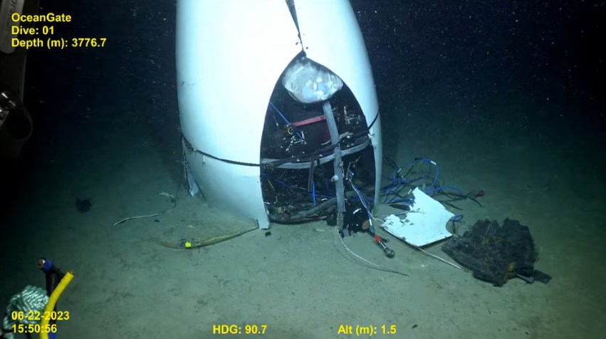
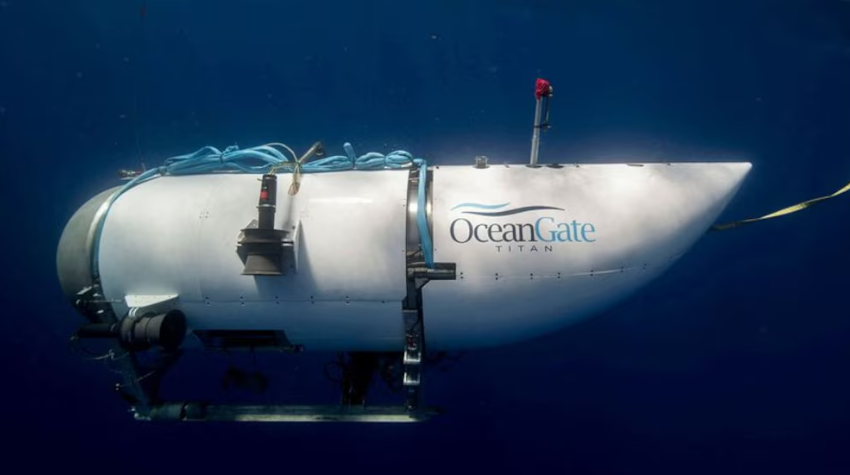
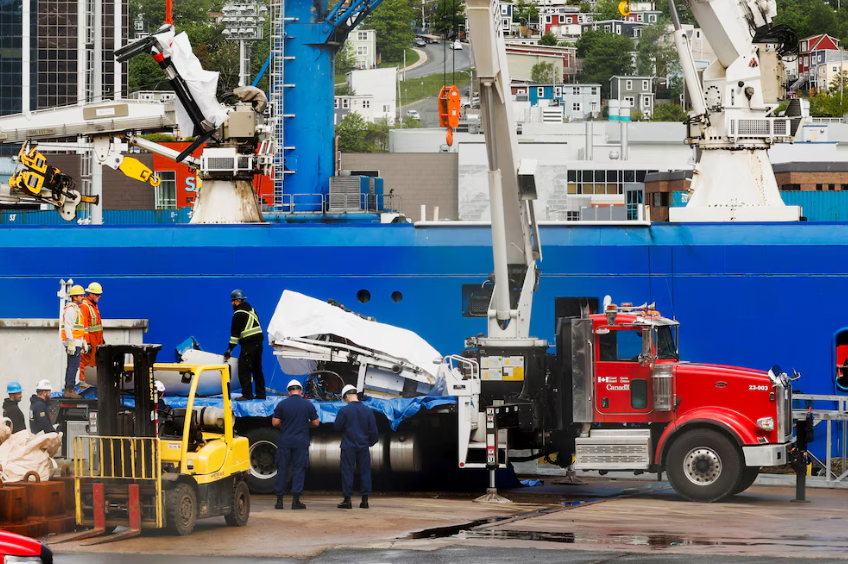
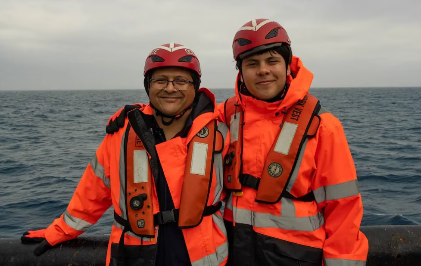

Dos cajas del tamaño de un zapato. Eso fue lo que recibió Christine Dawood nueve meses después de que el sumergible Titan implosionara a 3.800 metros de profundidad en el Atlántico Norte.
Dentro, los restos de su esposo Shahzada y de su hijo Suleman, de 19 años: material biológico separado con pruebas de ADN por el Laboratorio de Identificación de ADN del Departamento de Defensa de Estados Unidos (AFMES-AFDIL), con sede en Dover, Delaware.
“Cuando digo cuerpos, me refiero al líquido que quedó”, relató Dawood en entrevista con el diario británico The Guardian. “Vinieron en dos pequeñas cajas, como cajas de zapatos”.
La imagen es perturbadora, pero refleja con precisión la naturaleza de lo que ocurrió el 18 de junio de 2023, cuando el Titan, operado por la empresa OceanGate, sufrió una implosión catastrófica durante su descenso hacia los restos del RMS Titanic.
A 3.346 metros de profundidad, la presión del océano —unas 380 veces la atmosférica al nivel del mar, equivalente a que el peso de unos 50 elefantes se concentre sobre una superficie del tamaño de una hoja A4— colapsó el casco del sumergible en una fracción de segundo.
Los cinco ocupantes murieron de forma instantánea: el director ejecutivo de OceanGate, Stockton Rush, el empresario paquistaní-británico Shahzada Dawood, su hijo Suleman, el empresario británico Hamish Harding y el explorador francés Paul-Henri Nargeolet, la mayor autoridad mundial sobre el Titanic, quien ya había visitado el pecio 37 veces.
El proceso forense que devolvió algo a las familias
Según documentos de la Guardia Costera de Estados Unidos (USCG), los primeros restos humanos fueron recuperados del fondo oceánico el 28 de junio de 2023, cuando el buque Horizon Arctic llegó a St. John’s, Terranova, con los primeros fragmentos del sumergible.
En octubre de ese año, una segunda operación de salvamento recuperó restos adicionales, esta vez del interior de los escombros del Titan, y los transportó a un puerto estadounidense para su análisis. “Los restos fueron recuperados con cuidado y transportados para análisis por parte de profesionales médicos de Estados Unidos”, indicó la USCG en un comunicado.

El trabajo de identificación recayó sobre el AFMES-AFDIL, el mismo laboratorio que identifica los restos de militares caídos en combate. Los perfiles de ADN de los cinco fallecidos fueron confirmados de forma positiva, según consta en la presentación de la Junta de Investigación Marina (MBI) de la USCG, publicada en septiembre de 2024.
El proceso tomó meses porque la implosión no dejó casi nada reconocible. La física del evento lo explica: cuando el casco del Titan cedió, la compresión del aire interior fue tan violenta que, según simulaciones desarrolladas en 2023, la temperatura dentro del sumergible alcanzó brevemente valores comparables a la superficie del sol, todo en menos de dos milisegundos.
Lo que quedó en el fondo del océano fueron fragmentos del cono trasero, el domo posterior, anillos de titanio y restos de fibra de carbono, esparcidos en un radio de unos 500 metros al noreste de la proa del Titanic.

Dawood recibió solo lo que el laboratorio pudo atribuir con certeza a Shahzada y a Suleman. Había, además, una pila de material biológico con ADN mezclado que no podía asignarse a ninguna víctima en particular.
“Tienen un montón que no pueden separar, todo ADN mezclado, y me preguntaron si quería parte de eso también. Pero dije que no, solo lo que saben que es Suleman y Shahzada”, relató Dawood al diario británico.
Un casco que nunca debió sumergirse a esa profundidad
El informe final de la MBI, un documento de 335 páginas publicado en agosto de 2025, concluyó que la tragedia pudo haberse evitado.
La causa principal fue el proceso de ingeniería deficiente de OceanGate para el Titan, que resultó en la construcción de un casco de fibra de carbono compuesta con múltiples anomalías que no cumplía los requisitos de resistencia y durabilidad necesarios para operar a esa profundidad.
La elección del material fue, desde el principio, una apuesta de alto riesgo. Los sumergibles de aguas profundas convencionales usan cascos esféricos de titanio o acero de alta resistencia, materiales que distribuyen la presión de forma uniforme en todas las direcciones. La fibra de carbono, en cambio, es un material extraordinariamente resistente bajo tensión, pero débil bajo compresión.
Cada inmersión sometía el casco cilíndrico del Titan a lo que los ingenieros llaman “carga cíclica”: la presión aumentaba un 38.000% durante el descenso y volvía a cero al ascender. Ese ciclo repetido generó microfracturas y delaminaciones progresivas en las capas del casco.
La investigación del Consejo Nacional de Seguridad en el Transporte (NTSB) determinó que el casco del Titan sufrió daños irreparables en julio de 2022, durante la inmersión número 80, cuando los pasajeros escucharon un fuerte estallido al ascender.
Los sensores de deformación registraron un cambio permanente en la respuesta estructural del casco. Rush descartó el incidente como un desplazamiento del armazón y no ordenó ninguna investigación. Cada una de las cuatro inmersiones posteriores fue, según describió la BBC, “un desastre esperando ocurrir”.

El casco pasó los seis meses previos al viaje fatal estacionado a la intemperie en un aparcamiento en St. John’s, expuesto al invierno de Terranova, condiciones que los ingenieros consideran inadecuadas para un material de fibra de carbono.
El último mensaje del Titan llegó a la superficie el 18 de junio de 2023 a las 10:47:09 de la mañana, cuando el sumergible estaba a 3.341 metros de profundidad: “Dropped two wts” (“Soltamos dos pesos”). Siete segundos después, el casco falló.
La madre que cedió su asiento
Christine Dawood no estaba en el Titan. Había cedido su lugar a Suleman para que el adolescente pudiera acompañar a su padre. Shahzada, integrante de una de las familias más adineradas de Pakistán, había insistido en ir directamente al Titanic sin inmersiones previas de entrenamiento. “Si voy a hacer una inmersión, quiero hacerla bien”, le dijo a su esposa. El precio de los dos asientos: 500.000 dólares.

Dawood, psicóloga de formación, estaba a bordo del Polar Prince, el buque de superficie de OceanGate, cuando a las 11 de la mañana del 18 de junio escuchó que habían perdido la comunicación con el sumergible.
A las 18:30, el director de misión de OceanGate declaró oficialmente desaparecido al Titan. Cuatro días después, un vehículo de operación remota desplegado desde el Horizon Arctic llegó al fondo del océano y encontró los restos del cono trasero del sumergible. La implosión había ocurrido casi desde el inicio del descenso.
“Mi primer pensamiento fue: gracias a Dios”, admitió Dawood. “Cuando dijeron catastrófico, supe que Shahzada y Suleman no se enteraron de nada. Un momento estaban ahí y al siguiente ya no”.
Una oficial de la Guardia Costera canadiense presente cuando Dawood desembarcó le dio el consejo que más recuerda: “Darle vueltas a las cosas no te ayudará, así que no caigas en esa trampa. El hecho de que lo sepas ahora... significa que antes no lo sabías”.
Consecuencias legales y regulatorias
El informe de la MBI señaló que, de haber sobrevivido, Rush habría enfrentado cargos de homicidio culposo ante el Departamento de Justicia de Estados Unidos. El documento también identificó una cultura organizacional tóxica en OceanGate: empleados que levantaron alertas sobre la seguridad del Titan fueron amenazados con demandas o despedidos.
David Lochridge, ex director de operaciones marinas de la compañía, testificó ante la MBI que fue despedido en 2018 tras presentar un informe que advertía sobre las fallas del casco de fibra de carbono.
“Sabía que ese casco iba a fallar”, declaró Lochridge durante las audiencias de septiembre de 2024 en North Charleston, Carolina del Sur. La agencia regulatoria laboral OSHA recibió la denuncia de Lochridge pero no realizó seguimiento, una omisión que el informe final calificó como una oportunidad perdida para prevenir la tragedia.
La MBI emitió 17 recomendaciones de seguridad, entre ellas la creación de un marco regulatorio internacional para sumergibles de pasajeros y la obligación de que los operadores presenten planes de emergencia antes de cada inmersión.
En la casa de Surrey donde vive con su hija, el cuarto de Suleman permanece intacto. En el centro de la cocina, dentro de una vitrina de cristal, el modelo de Lego del Titanic que Suleman construyó con 9.090 piezas sigue en su lugar.
“¿Qué iba a hacer? ¿Destruirlo? ¿Esconderlo? Suleman dedicó todas esas horas”, dijo Dawood.